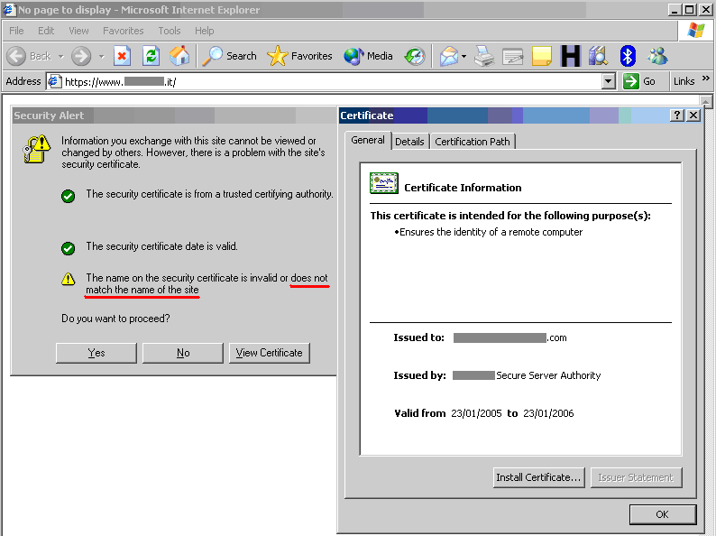
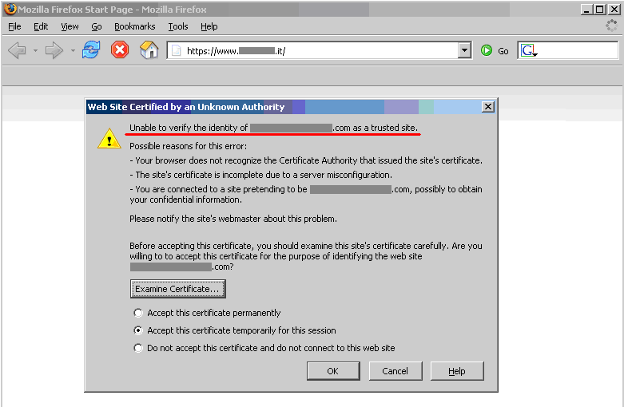

Testing for Weak SSL TLS Ciphers Insufficient Transport Layer Protection
| ID |
|---|
| WSTG-CRYP-01 |
Summary
Sensitive data must be protected when it is transmitted through the network. Such data can include user credentials and credit cards. As a rule of thumb, if data must be protected when it is stored, it must be protected also during transmission.
HTTP is a clear-text protocol and it is normally secured via an SSL/TLS tunnel, resulting in HTTPS traffic. The use of this protocol ensures not only confidentiality, but also authentication. Servers are authenticated using digital certificates and it is also possible to use client certificate for mutual authentication.
Even if high grade ciphers are today supported and normally used, some misconfiguration in the server can be used to force the use of a weak cipher - or at worst no encryption - permitting to an attacker to gain access to the supposed secure communication channel. Other misconfiguration can be used for a Denial of Service attack.
Common Issues
A vulnerability occurs if the HTTP protocol is used to transmit sensitive information (e.g. credentials transmitted over HTTP).
When the SSL/TLS service is present it is good but it increments the attack surface and the following vulnerabilities exist:
- SSL/TLS protocols, ciphers, keys and renegotiation must be properly configured.
- Certificate validity must be ensured.
Other vulnerabilities linked to this are:
- Software exposed must be updated due to possibility of known vulnerabilities.
- Usage of Secure flag for Session Cookies.
- Usage of HTTP Strict Transport Security (HSTS).
- The presence of both HTTP and HTTPS, which can be used to intercept traffic.
- The presence of mixed HTTPS and HTTP content in the same page, which can be used to Leak information.
Sensitive Data Transmitted in Clear-Text
The application should not transmit sensitive information via unencrypted channels. Typically it is possible to find basic authentication over HTTP, input password or session cookie sent via HTTP and, in general, other information considered by regulations, laws or organization policy.
Weak SSL/TLS Ciphers/Protocols/Keys
Historically, there have been limitations set in place by the U.S. government to allow cryptosystems to be exported only for key sizes of at most 40 bits, a key length which could be broken and would allow the decryption of communications. Since then cryptographic export regulations have been relaxed the maximum key size is 128 bits.
It is important to check the SSL configuration being used to avoid putting in place cryptographic support which could be easily defeated. To reach this goal SSL-based services should not offer the possibility to choose weak cipher suite. A cipher suite is specified by an encryption protocol (e.g. DES, RC4, AES), the encryption key length (e.g. 40, 56, or 128 bits), and a hash algorithm (e.g. SHA, MD5) used for integrity checking.
Briefly, the key points for the cipher suite determination are the following:
- The client sends to the server a ClientHello message specifying, among other information, the protocol and the cipher suites that it is able to handle. Note that a client is usually a web browser (most popular SSL client nowadays), but not necessarily, since it can be any SSL-enabled application; the same holds for the server, which needs not to be a web server, though this is the most common case. (See also: stunnel.)
- The server responds with a ServerHello message, containing the chosen protocol and cipher suite that will be used for that session (in general the server selects the strongest protocol and cipher suite supported by both the client and server).
It is possible (for example, by means of configuration directives) to specify which cipher suites the server will honor. In this way you may control whether or not conversations with clients will support 40-bit encryption only.
- The server sends its Certificate message and, if client authentication is required, also sends a CertificateRequest message to the client.
- The server sends a ServerHelloDone message and waits for a client response.
- Upon receipt of the ServerHelloDone message, the client verifies the validity of the server’s digital certificate.
TLS/SSL Certificate Validity – Client and Server
When accessing a web application via the HTTPS protocol, a secure channel is established between the client and the server. The identity of one (the server) or both parties (client and server) is then established by means of digital certificates. So, once the cipher suite is determined, the “SSL Handshake” continues with the exchange of the certificates:
- The server sends its Certificate message and, if client authentication is required, also sends a CertificateRequest message to the client.
- The server sends a ServerHelloDone message and waits for a client response.
- Upon receipt of the ServerHelloDone message, the client verifies the validity of the server’s digital certificate.
In order for the communication to be set up, a number of checks on the certificates must be passed. While discussing SSL and certificate based authentication is beyond the scope of this guide, this section will focus on the main criteria involved in ascertaining certificate validity:
- Checking if the Certificate Authority (CA) is a known one (meaning one considered trusted);
- Checking that the certificate is currently valid;
- Checking that the name of the site and the name reported in the certificate match.
Let’s examine each check more in detail.
- Each browser comes with a pre-loaded list of trusted CAs, against which the certificate signing CA is compared (this list can be customized and expanded at will). During the initial negotiations with an HTTPS server, if the server certificate relates to a CA unknown to the browser, a warning is usually raised. This happens most often because a web application relies on a certificate signed by a self-established CA. Whether this is to be considered a concern depends on several factors. For example, this may be fine for an Intranet environment (think of corporate web email being provided via HTTPS; here, obviously all users recognize the internal CA as a trusted CA). When a service is provided to the general public via the Internet, however (i.e. when it is important to positively verify the identity of the server we are talking to), it is usually imperative to rely on a trusted CA, one which is recognized by all the user base (and here we stop with our considerations; we won’t delve deeper in the implications of the trust model being used by digital certificates).
- Certificates have an associated period of validity, therefore they may expire. Again, we are warned by the browser about this. A public service needs a temporally valid certificate; otherwise, it means we are talking with a server whose certificate was issued by someone we trust, but has expired without being renewed.
- What if the name on the certificate and the name of the server do not match? If this happens, it might sound suspicious. For a number of reasons, this is not so rare to see. A system may host a number of name-based virtual hosts, which share the same IP address and are identified by means of the HTTP 1.1 Host: header information. In this case, since the SSL handshake checks the server certificate before the HTTP request is processed, it is not possible to assign different certificates to each virtual server. Therefore, if the name of the site and the name reported in the certificate do not match, we have a condition which is typically signaled by the browser. To avoid this, IP-based virtual servers must be used. sslyze and RFC: TLS Extensions describe techniques to deal with this problem and allow name-based virtual hosts to be correctly referenced.
Other Vulnerabilities
The presence of a new service, listening in a separate tcp port may introduce vulnerabilities such as infrastructure vulnerabilities if the software is not up to date. Furthermore, for the correct protection of data during transmission the Session Cookie must use the Secure flag and some directives should be sent to the browser to accept only secure traffic (e.g. HSTS, CSP).
Also there are some attacks that can be used to intercept traffic if the web server exposes the application on both HTTP and HTTPS or in case of mixed HTTP and HTTPS resources in the same page.
How to Test
Testing for Sensitive Data Transmitted in Clear-Text
Various types of information which must be protected can be also transmitted in clear text. It is possible to check if this information is transmitted over HTTP instead of HTTPS. Please refer to specific tests for full details, for credentials and other kind of data.
Example 1. Basic Authentication Over HTTP
A typical example is the usage of Basic Authentication over HTTP because with Basic Authentication, after log in, credentials are encoded - and not encrypted - into HTTP Headers.
$ curl -kis http://example.com/restricted/
HTTP/1.1 401 Authorization Required
Date: Fri, 01 Aug 2013 00:00:00 GMT
WWW-Authenticate: Basic realm="Restricted Area"
Accept-Ranges: bytes
Vary: Accept-Encoding
Content-Length: 162
Content-Type: text/html
<html><head><title>401 Authorization Required</title></head>
<body bgcolor=white>
<h1>401 Authorization Required</h1>
Invalid login credentials!
</body></html>
Testing for Weak SSL/TLS Ciphers/Protocols/Keys Vulnerabilities
The large number of available cipher suites and quick progress in cryptanalysis makes testing an SSL server a non-trivial task.
At the time of writing these criteria are widely recognized as minimum checklist:
- Weak ciphers must not be used (e.g. less than 128 bits; no NULL ciphers suite, due to no encryption used; no Anonymous Diffie-Hellmann, due to not provides authentication).
- Weak protocols must be disabled (e.g. SSLv2 must be disabled, due to known weaknesses in protocol design).
- Renegotiation must be properly configured (e.g. Insecure Renegotiation must be disabled, due to MiTM attacks and Client-initiated Renegotiation must be disabled, due to Denial of Service vulnerability).
- No Export (EXP) level cipher suites, due to can be easily broken.
- X.509 certificates key length must be strong (e.g. if RSA or DSA is used the key must be at least 1024 bits).
- X.509 certificates must be signed only with secure hashing algoritms (e.g. not signed using MD5 hash, due to known collision attacks on this hash).
- Keys must be generated with proper entropy (e.g, Weak Key Generated with Debian).
A more complete checklist includes:
- Secure Renegotiation should be enabled.
- MD5 should not be used, due to known collision attacks.
- RC4 should not be used, due to crypto-analytical attacks.
- Server should be protected from BEAST Attack.
- Server should be protected from CRIME attack, TLS compression must be disabled.
- Server should support Forward Secrecy.
The following standards can be used as reference while assessing SSL servers:
- PCI-DSS requires compliant parties to use “strong cryptography” without precisely defining key lengths and algorithms. Common interpretation, partially based on previous versions of the standard, is that at least 128 bit key cipher, no export strength algorithms and no SSLv2 should be used.
- Qualsys SSL Labs Server Rating Guide, Deployment best practice, and SSL Threat Model has been proposed to standardize SSL server assessment and configuration. But is less updated than the SSL Server tool.
- OWASP has a lot of resources about SSL/TLS Security:
Some tools and scanners both free (e.g. SSLAudit or SSLScan) and commercial (e.g. Tenable Nessus), can be used to assess SSL/TLS vulnerabilities. But due to evolution of these vulnerabilities a good way to test is to check them manually with OpenSSL or use the tool’s output as an input for manual evaluation using the references.
Sometimes the SSL/TLS enabled service is not directly accessible and the tester can access it only via a HTTP proxy using CONNECT method. Most of the tools will try to connect to desired tcp port to start SSL/TLS handshake. This will not work since desired port is accessible only via HTTP proxy. The tester can easily circumvent this by using relaying software such as socat.
Example 1. TLS/SSL Service Recognition via Nmap
The first step is to identify ports which have SSL/TLS wrapped services. Typically tcp ports with SSL for web and mail services are - but not limited to - 443 (https), 465 (ssmtp), 585 (imap4-ssl), 993 (imaps), 995 (ssl-pop).
In this example we search for SSL services using nmap with “-sV” option, used to identify services and it is also able to identify SSL services. Other options are for this particular example and must be customized. Often in a Web Application Penetration Test scope is limited to port 80 and 443.
$ nmap -sV --reason -PN -n --top-ports 100 www.example.com
Starting Nmap 6.25 ( http://nmap.org ) at 2013-01-01 00:00 CEST
Nmap scan report for www.example.com (127.0.0.1)
Host is up, received user-set (0.20s latency).
Not shown: 89 filtered ports
Reason: 89 no-responses
PORT STATE SERVICE REASON VERSION
21/tcp open ftp syn-ack Pure-FTPd
22/tcp open ssh syn-ack OpenSSH 5.3 (protocol 2.0)
25/tcp open smtp syn-ack Exim smtpd 4.80
26/tcp open smtp syn-ack Exim smtpd 4.80
80/tcp open http syn-ack
110/tcp open pop3 syn-ack Dovecot pop3d
143/tcp open imap syn-ack Dovecot imapd
443/tcp open ssl/http syn-ack Apache
465/tcp open ssl/smtp syn-ack Exim smtpd 4.80
993/tcp open ssl/imap syn-ack Dovecot imapd
995/tcp open ssl/pop3 syn-ack Dovecot pop3d
Service Info: Hosts: example.com
Service detection performed. Please report any incorrect results at http://nmap.org/submit/ .
Nmap done: 1 IP address (1 host up) scanned in 131.38 seconds
Example 2. Checking for Certificate Information, Weak Ciphers and SSLv2 via Nmap
Nmap has two scripts for checking Certificate information, Weak Ciphers and SSLv2.
$ nmap --script ssl-cert,ssl-enum-ciphers -p 443,465,993,995 www.example.com
Starting Nmap 6.25 ( http://nmap.org ) at 2013-01-01 00:00 CEST
Nmap scan report for www.example.com (127.0.0.1)
Host is up (0.090s latency).
rDNS record for 127.0.0.1: www.example.com
PORT STATE SERVICE
443/tcp open https
| ssl-cert: Subject: commonName=www.example.org
| Issuer: commonName=*******
| Public Key type: rsa
| Public Key bits: 1024
| Not valid before: 2010-01-23T00:00:00+00:00
| Not valid after: 2020-02-28T23:59:59+00:00
| MD5: *******
|_SHA-1: *******
| ssl-enum-ciphers:
| SSLv3:
| ciphers:
| TLS_RSA_WITH_CAMELLIA_128_CBC_SHA - strong
| TLS_RSA_WITH_CAMELLIA_256_CBC_SHA - strong
| TLS_RSA_WITH_RC4_128_SHA - strong
| compressors:
| NULL
| TLSv1.0:
| ciphers:
| TLS_RSA_WITH_CAMELLIA_128_CBC_SHA - strong
| TLS_RSA_WITH_CAMELLIA_256_CBC_SHA - strong
| TLS_RSA_WITH_RC4_128_SHA - strong
| compressors:
| NULL
|_ least strength: strong
465/tcp open smtps
| ssl-cert: Subject: commonName=*.exapmple.com
| Issuer: commonName=*******
| Public Key type: rsa
| Public Key bits: 2048
| Not valid before: 2010-01-23T00:00:00+00:00
| Not valid after: 2020-02-28T23:59:59+00:00
| MD5: *******
|_SHA-1: *******
| ssl-enum-ciphers:
| SSLv3:
| ciphers:
| TLS_RSA_WITH_CAMELLIA_128_CBC_SHA - strong
| TLS_RSA_WITH_CAMELLIA_256_CBC_SHA - strong
| TLS_RSA_WITH_RC4_128_SHA - strong
| compressors:
| NULL
| TLSv1.0:
| ciphers:
| TLS_RSA_WITH_CAMELLIA_128_CBC_SHA - strong
| TLS_RSA_WITH_CAMELLIA_256_CBC_SHA - strong
| TLS_RSA_WITH_RC4_128_SHA - strong
| compressors:
| NULL
|_ least strength: strong
993/tcp open imaps
| ssl-cert: Subject: commonName=*.exapmple.com
| Issuer: commonName=*******
| Public Key type: rsa
| Public Key bits: 2048
| Not valid before: 2010-01-23T00:00:00+00:00
| Not valid after: 2020-02-28T23:59:59+00:00
| MD5: *******
|_SHA-1: *******
| ssl-enum-ciphers:
| SSLv3:
| ciphers:
| TLS_RSA_WITH_CAMELLIA_128_CBC_SHA - strong
| TLS_RSA_WITH_CAMELLIA_256_CBC_SHA - strong
| TLS_RSA_WITH_RC4_128_SHA - strong
| compressors:
| NULL
| TLSv1.0:
| ciphers:
| TLS_RSA_WITH_CAMELLIA_128_CBC_SHA - strong
| TLS_RSA_WITH_CAMELLIA_256_CBC_SHA - strong
| TLS_RSA_WITH_RC4_128_SHA - strong
| compressors:
| NULL
|_ least strength: strong
995/tcp open pop3s
| ssl-cert: Subject: commonName=*.exapmple.com
| Issuer: commonName=*******
| Public Key type: rsa
| Public Key bits: 2048
| Not valid before: 2010-01-23T00:00:00+00:00
| Not valid after: 2020-02-28T23:59:59+00:00
| MD5: *******
|_SHA-1: *******
| ssl-enum-ciphers:
| SSLv3:
| ciphers:
| TLS_RSA_WITH_CAMELLIA_128_CBC_SHA - strong
| TLS_RSA_WITH_CAMELLIA_256_CBC_SHA - strong
| TLS_RSA_WITH_RC4_128_SHA - strong
| compressors:
| NULL
| TLSv1.0:
| ciphers:
| TLS_RSA_WITH_CAMELLIA_128_CBC_SHA - strong
| TLS_RSA_WITH_CAMELLIA_256_CBC_SHA - strong
| TLS_RSA_WITH_RC4_128_SHA - strong
| compressors:
| NULL
|_ least strength: strong
Nmap done: 1 IP address (1 host up) scanned in 8.64 seconds
Example 3 Checking for Client-Initiated Renegotiation and Secure Renegotiation Via OpenSSL (Manually)
OpenSSL can be used for testing manually SSL/TLS. In this example the tester tries to initiate a renegotiation by client m connecting to server with OpenSSL. The tester then writes the fist line of an HTTP request and types R in a new line. He then waits for renegotiation and completion of the HTTP request and checks if secure renegotiation is supported by looking at the server output. Using manual requests it is also possible to see if Compression is enabled for TLS and to check for CRIME, for ciphers and for other vulnerabilities.
$ openssl s_client -connect www2.example.com:443
CONNECTED(00000003)
depth=2 ******
verify error:num=20:unable to get local issuer certificate
verify return:0
---
Certificate chain
0 s:******
i:******
1 s:******
i:******
2 s:******
i:******
---
Server certificate
-----BEGIN CERTIFICATE-----
******
-----END CERTIFICATE-----
subject=******
issuer=******
---
No client certificate CA names sent
---
SSL handshake has read 3558 bytes and written 640 bytes
---
New, TLSv1/SSLv3, Cipher is DES-CBC3-SHA
Server public key is 2048 bit
Secure Renegotiation IS NOT supported
Compression: NONE
Expansion: NONE
SSL-Session:
Protocol : TLSv1
Cipher : DES-CBC3-SHA
Session-ID: ******
Session-ID-ctx:
Master-Key: ******
Key-Arg : None
PSK identity: None
PSK identity hint: None
SRP username: None
Start Time: ******
Timeout : 300 (sec)
Verify return code: 20 (unable to get local issuer certificate)
---
Now the tester can write the first line of an HTTP request and then R in a new line.
HEAD / HTTP/1.1
R
Server is renegotiating
RENEGOTIATING
depth=2 C******
verify error:num=20:unable to get local issuer certificate
verify return:0
And the tester can complete our request, checking for response.
HEAD / HTTP/1.1
HTTP/1.1 403 Forbidden ( The server denies the specified Uniform Resource Locator (URL). Contact the server administrator. )
Connection: close
Pragma: no-cache
Cache-Control: no-cache
Content-Type: text/html
Content-Length: 1792
read:errno=0
Even if the HEAD is not permitted, client-initiated renegotiation is permitted.
Example 4. Testing Supported Cipher Suites, BEAST and CRIME Attacks via TestSSLServer
TestSSLServer is a script which permits the tester to check the cipher suite and also for BEAST and CRIME attacks. BEAST (Browser Exploit Against SSL/TLS) exploits a vulnerability of CBC in TLS 1.0. CRIME (Compression Ratio Info-leak Made Easy) exploits a vulnerability of TLS Compression, that should be disabled. What is interesting is that the first fix for BEAST was the use of RC4, but this is now discouraged due to a crypto-analytical attack to RC4.
An online tool to check for these attacks is SSL Labs, but can be used only for Internet facing servers. Also consider that target data will be stored on SSL Labs server and also will result some connection from SSL Labs server.
$ java -jar TestSSLServer.jar www3.example.com 443
Supported versions: SSLv3 TLSv1.0 TLSv1.1 TLSv1.2
Deflate compression: no
Supported cipher suites (ORDER IS NOT SIGNIFICANT):
SSLv3
RSA_WITH_RC4_128_SHA
RSA_WITH_3DES_EDE_CBC_SHA
DHE_RSA_WITH_3DES_EDE_CBC_SHA
RSA_WITH_AES_128_CBC_SHA
DHE_RSA_WITH_AES_128_CBC_SHA
RSA_WITH_AES_256_CBC_SHA
DHE_RSA_WITH_AES_256_CBC_SHA
RSA_WITH_CAMELLIA_128_CBC_SHA
DHE_RSA_WITH_CAMELLIA_128_CBC_SHA
RSA_WITH_CAMELLIA_256_CBC_SHA
DHE_RSA_WITH_CAMELLIA_256_CBC_SHA
TLS_RSA_WITH_SEED_CBC_SHA
TLS_DHE_RSA_WITH_SEED_CBC_SHA
(TLSv1.0: idem)
(TLSv1.1: idem)
TLSv1.2
RSA_WITH_RC4_128_SHA
RSA_WITH_3DES_EDE_CBC_SHA
DHE_RSA_WITH_3DES_EDE_CBC_SHA
RSA_WITH_AES_128_CBC_SHA
DHE_RSA_WITH_AES_128_CBC_SHA
RSA_WITH_AES_256_CBC_SHA
DHE_RSA_WITH_AES_256_CBC_SHA
RSA_WITH_AES_128_CBC_SHA256
RSA_WITH_AES_256_CBC_SHA256
RSA_WITH_CAMELLIA_128_CBC_SHA
DHE_RSA_WITH_CAMELLIA_128_CBC_SHA
DHE_RSA_WITH_AES_128_CBC_SHA256
DHE_RSA_WITH_AES_256_CBC_SHA256
RSA_WITH_CAMELLIA_256_CBC_SHA
DHE_RSA_WITH_CAMELLIA_256_CBC_SHA
TLS_RSA_WITH_SEED_CBC_SHA
TLS_DHE_RSA_WITH_SEED_CBC_SHA
TLS_RSA_WITH_AES_128_GCM_SHA256
TLS_RSA_WITH_AES_256_GCM_SHA384
TLS_DHE_RSA_WITH_AES_128_GCM_SHA256
TLS_DHE_RSA_WITH_AES_256_GCM_SHA384
----------------------
Server certificate(s):
******
----------------------
Minimal encryption strength: strong encryption (96-bit or more)
Achievable encryption strength: strong encryption (96-bit or more)
BEAST status: vulnerable
CRIME status: protected
Example 5. Testing SSL/TLS Vulnerabilities with sslyze
sslyze is a python script which permits mass scanning and XML output. The following is an example of a regular scan. It is one of the most complete and versatile tools for SSL/TLS testing.
$ ./sslyze.py --regular example.com:443
REGISTERING AVAILABLE PLUGINS
-----------------------------
PluginHSTS
PluginSessionRenegotiation
PluginCertInfo
PluginSessionResumption
PluginOpenSSLCipherSuites
PluginCompression
CHECKING HOST(S) AVAILABILITY
-----------------------------
example.com:443 => 127.0.0.1:443
SCAN RESULTS FOR EXAMPLE.COM:443 - 127.0.0.1:443
---------------------------------------------------
* Compression :
Compression Support: Disabled
* Session Renegotiation :
Client-initiated Renegotiations: Rejected
Secure Renegotiation: Supported
* Certificate :
Validation w/ Mozilla's CA Store: Certificate is NOT Trusted: unable to get local issuer certificate
Hostname Validation: MISMATCH
SHA1 Fingerprint: ******
Common Name: www.example.com
Issuer: ******
Serial Number: ****
Not Before: Sep 26 00:00:00 2010 GMT
Not After: Sep 26 23:59:59 2020 GMT
Signature Algorithm: sha1WithRSAEncryption
Key Size: 1024 bit
X509v3 Subject Alternative Name: {'othername': ['<unsupported>'], 'DNS': ['www.example.com']}
* OCSP Stapling :
Server did not send back an OCSP response.
* Session Resumption :
With Session IDs: Supported (5 successful, 0 failed, 0 errors, 5 total attempts).
With TLS Session Tickets: Supported
* SSLV2 Cipher Suites :
Rejected Cipher Suite(s): Hidden
Preferred Cipher Suite: None
Accepted Cipher Suite(s): None
Undefined - An unexpected error happened: None
* SSLV3 Cipher Suites :
Rejected Cipher Suite(s): Hidden
Preferred Cipher Suite:
RC4-SHA 128 bits HTTP 200 OK
Accepted Cipher Suite(s):
CAMELLIA256-SHA 256 bits HTTP 200 OK
RC4-SHA 128 bits HTTP 200 OK
CAMELLIA128-SHA 128 bits HTTP 200 OK
Undefined - An unexpected error happened: None
* TLSV1_1 Cipher Suites :
Rejected Cipher Suite(s): Hidden
Preferred Cipher Suite: None
Accepted Cipher Suite(s): None
Undefined - An unexpected error happened:
ECDH-RSA-AES256-SHA socket.timeout - timed out
ECDH-ECDSA-AES256-SHA socket.timeout - timed out
* TLSV1_2 Cipher Suites :
Rejected Cipher Suite(s): Hidden
Preferred Cipher Suite: None
Accepted Cipher Suite(s): None
Undefined - An unexpected error happened:
ECDH-RSA-AES256-GCM-SHA384 socket.timeout - timed out
ECDH-ECDSA-AES256-GCM-SHA384 socket.timeout - timed out
* TLSV1 Cipher Suites :
Rejected Cipher Suite(s): Hidden
Preferred Cipher Suite:
RC4-SHA 128 bits Timeout on HTTP GET
Accepted Cipher Suite(s):
CAMELLIA256-SHA 256 bits HTTP 200 OK
RC4-SHA 128 bits HTTP 200 OK
CAMELLIA128-SHA 128 bits HTTP 200 OK
Undefined - An unexpected error happened:
ADH-CAMELLIA256-SHA socket.timeout - timed out
SCAN COMPLETED IN 9.68 S
------------------------
Example 6. Testing SSL/TLS with testssl.sh
Testssl.sh is a Linux shell script which provides clear output to facilitate good decision making. It can not only check web servers but also services on other ports, supports STARTTLS, SNI, SPDY and does a few check on the HTTP header as well.
It’s a very easy to use tool. Here’s some sample output (without colors):
$ testssl.sh owasp.org
########################################################
testssl.sh v2.0rc3 (https://testssl.sh)
($Id: testssl.sh,v 1.97 2014/04/15 21:54:29 dirkw Exp $)
This program is free software. Redistribution +
modification under GPLv2 is permitted.
USAGE w/o ANY WARRANTY. USE IT AT YOUR OWN RISK!
Note you can only check the server against what is
available (ciphers/protocols) locally on your machine
########################################################
Using "OpenSSL 1.0.2-beta1 24 Feb 2014" on
"myhost:/<mypath>/bin/openssl64"
Testing now (2014-04-17 15:06) ---> owasp.org:443 <---
("owasp.org" resolves to "192.237.166.62 / 2001:4801:7821:77:cd2c:d9de:ff10:170e")
--> Testing Protocols
SSLv2 NOT offered (ok)
SSLv3 offered
TLSv1 offered (ok)
TLSv1.1 offered (ok)
TLSv1.2 offered (ok)
SPDY/NPN not offered
--> Testing standard cipher lists
Null Cipher NOT offered (ok)
Anonymous NULL Cipher NOT offered (ok)
Anonymous DH Cipher NOT offered (ok)
40 Bit encryption NOT offered (ok)
56 Bit encryption NOT offered (ok)
Export Cipher (general) NOT offered (ok)
Low (<=64 Bit) NOT offered (ok)
DES Cipher NOT offered (ok)
Triple DES Cipher offered
Medium grade encryption offered
High grade encryption offered (ok)
--> Testing server defaults (Server Hello)
Negotiated protocol TLSv1.2
Negotiated cipher AES128-GCM-SHA256
Server key size 2048 bit
TLS server extensions: server name, renegotiation info, session ticket, heartbeat
Session Tickets RFC 5077 300 seconds
--> Testing specific vulnerabilities
Heartbleed (CVE-2014-0160), experimental NOT vulnerable (ok)
Renegotiation (CVE 2009-3555) NOT vulnerable (ok)
CRIME, TLS (CVE-2012-4929) NOT vulnerable (ok)
--> Checking RC4 Ciphers
RC4 seems generally available. Now testing specific ciphers...
Hexcode Cipher Name KeyExch. Encryption Bits
--------------------------------------------------------------------
[0x05] RC4-SHA RSA RC4 128
RC4 is kind of broken, for e.g. IE6 consider 0x13 or 0x0a
--> Testing HTTP Header response
HSTS no
Server Apache
Application (None)
--> Testing (Perfect) Forward Secrecy (P)FS)
no PFS available
Done now (2014-04-17 15:07) ---> owasp.org:443 <---
user@myhost: %
STARTTLS would be tested via testssl.sh -t smtp.gmail.com:587 smtp, each ciphers with testssl -e <target>, each ciphers per protocol with testssl -E <target>. To just display what local ciphers that are installed for OpenSSL see testssl -V. For a thorough check it is best to dump the supplied OpenSSL binaries in the path or the one of testssl.sh.
The interesting thing is if a tester looks at the sources they learn how features are tested, see e.g. Example 4. What is even better is that it does the whole handshake for heartbleed in pure /bin/bash with /dev/tcp sockets – no piggyback perl/python/you name it.
Additionally it provides a prototype (via testssl.sh -V) of mapping to RFC cipher suite names to OpenSSL ones. The tester needs the file mapping-rfc.txt in same directory.
Example 7. Testing SSL/TLS with SSL Breacher
SSL Breacher is combination of several other tools plus some additional checks in complementing most comprehensive SSL tests. It supports the following checks:
- HeartBleed
- ChangeCipherSpec Injection
- BREACH
- BEAST
- Forward Secrecy support
- RC4 support
- CRIME & TIME (If CRIME is detected, TIME will also be reported)
- Lucky13
- HSTS: Check for implementation of HSTS header
- HSTS: Reasonable duration of MAX-AGE
- HSTS: Check for SubDomains support
- Certificate expiration
- Insufficient public key-length
- Host-name mismatch
- Weak/Insecure Hashing Algorithm (MD2, MD4, MD5, SHA1)
- SSLv2 support
- Weak ciphers check (Low, Anon, Null, Export)
- Null Prefix in certificate
- HTTPS Stripping
- Surf Jacking
- Non-SSL elements/contents embedded in SSL page
- Cache-Control
$ breacher.sh https://localhost/login.php
Host Info:
==============
Host : localhost
Port : 443
Path : /login.php
Certificate Info:
==================
Type: Domain Validation Certificate (i.e. NON-Extended Validation Certificate)
Expiration Date: Sat Nov 09 07:48:47 SGT 2019
Signature Hash Algorithm: SHA1withRSA
Public key: Sun RSA public key, 1024 bits
modulus: 135632964843555009910164098161004086259135236815846778903941582882908611097021488277565732851712895057227849656364886898196239901879569635659861770850920241178222686670162318147175328086853962427921575656093414000691131757099663322369656756090030190369923050306668778534926124693591013220754558036175189121517
public exponent: 65537
Signed for: CN=localhost
Signed by: CN=localhost
Total certificate chain: 1
(Use -Djavax.net.debug=ssl:handshake:verbose for debugged output.)
=====================================
Certificate Validation:
===============================
[!] Signed using Insufficient public key length 1024 bits
(Refer to http://www.keylength.com/ for details)
[!] Certificate Signer: Self-signed/Untrusted CA - verified with Firefox & Java ROOT CAs.
=====================================
Loading module: Hut3 Cardiac Arrest ...
Checking localhost:443 for Heartbleed bug (CVE-2014-0160) ...
[-] Connecting to 127.0.0.1:443 using SSLv3
[-] Sending ClientHello
[-] ServerHello received
[-] Sending Heartbeat
[Vulnerable] Heartbeat response was 16384 bytes instead of 3! 127.0.0.1:443 is vulnerable over SSLv3
[-] Displaying response (lines consisting entirely of null bytes are removed):
0000: 02 FF FF 08 03 00 53 48 73 F0 7C CA C1 D9 02 04 ......SHs.|.....
0010: F2 1D 2D 49 F5 12 BF 40 1B 94 D9 93 E4 C4 F4 F0 ..-I...@........
0020: D0 42 CD 44 A2 59 00 02 96 00 00 00 01 00 02 00 .B.D.Y..........
0060: 1B 00 1C 00 1D 00 1E 00 1F 00 20 00 21 00 22 00 .......... .!.".
0070: 23 00 24 00 25 00 26 00 27 00 28 00 29 00 2A 00 #.$.%.&.'.(.).*.
0080: 2B 00 2C 00 2D 00 2E 00 2F 00 30 00 31 00 32 00 +.,.-.../.0.1.2.
0090: 33 00 34 00 35 00 36 00 37 00 38 00 39 00 3A 00 3.4.5.6.7.8.9.:.
00a0: 3B 00 3C 00 3D 00 3E 00 3F 00 40 00 41 00 42 00 ;.<.=.>.?.@.A.B.
00b0: 43 00 44 00 45 00 46 00 60 00 61 00 62 00 63 00 C.D.E.F.`.a.b.c.
00c0: 64 00 65 00 66 00 67 00 68 00 69 00 6A 00 6B 00 d.e.f.g.h.i.j.k.
00d0: 6C 00 6D 00 80 00 81 00 82 00 83 00 84 00 85 00 l.m.............
01a0: 20 C0 21 C0 22 C0 23 C0 24 C0 25 C0 26 C0 27 C0 .!.".#.$.%.&.'.
01b0: 28 C0 29 C0 2A C0 2B C0 2C C0 2D C0 2E C0 2F C0 (.).*.+.,.-.../.
01c0: 30 C0 31 C0 32 C0 33 C0 34 C0 35 C0 36 C0 37 C0 0.1.2.3.4.5.6.7.
01d0: 38 C0 39 C0 3A C0 3B C0 3C C0 3D C0 3E C0 3F C0 8.9.:.;.<.=.>.?.
01e0: 40 C0 41 C0 42 C0 43 C0 44 C0 45 C0 46 C0 47 C0 @.A.B.C.D.E.F.G.
01f0: 48 C0 49 C0 4A C0 4B C0 4C C0 4D C0 4E C0 4F C0 H.I.J.K.L.M.N.O.
0200: 50 C0 51 C0 52 C0 53 C0 54 C0 55 C0 56 C0 57 C0 P.Q.R.S.T.U.V.W.
0210: 58 C0 59 C0 5A C0 5B C0 5C C0 5D C0 5E C0 5F C0 X.Y.Z.[.\.].^._.
0220: 60 C0 61 C0 62 C0 63 C0 64 C0 65 C0 66 C0 67 C0 `.a.b.c.d.e.f.g.
0230: 68 C0 69 C0 6A C0 6B C0 6C C0 6D C0 6E C0 6F C0 h.i.j.k.l.m.n.o.
0240: 70 C0 71 C0 72 C0 73 C0 74 C0 75 C0 76 C0 77 C0 p.q.r.s.t.u.v.w.
0250: 78 C0 79 C0 7A C0 7B C0 7C C0 7D C0 7E C0 7F C0 x.y.z.{.|.}.~...
02c0: 00 00 49 00 0B 00 04 03 00 01 02 00 0A 00 34 00 ..I...........4.
02d0: 32 00 0E 00 0D 00 19 00 0B 00 0C 00 18 00 09 00 2...............
0300: 10 00 11 00 23 00 00 00 0F 00 01 01 00 00 00 00 ....#...........
0bd0: 00 00 00 00 00 00 00 00 00 12 7D 01 00 10 00 02 ..........}.....
[-] Closing connection
[-] Connecting to 127.0.0.1:443 using TLSv1.0
[-] Sending ClientHello
[-] ServerHello received
[-] Sending Heartbeat
[Vulnerable] Heartbeat response was 16384 bytes instead of 3! 127.0.0.1:443 is vulnerable over TLSv1.0
[-] Displaying response (lines consisting entirely of null bytes are removed):
0000: 02 FF FF 08 03 01 53 48 73 F0 7C CA C1 D9 02 04 ......SHs.|.....
0010: F2 1D 2D 49 F5 12 BF 40 1B 94 D9 93 E4 C4 F4 F0 ..-I...@........
0020: D0 42 CD 44 A2 59 00 02 96 00 00 00 01 00 02 00 .B.D.Y..........
0060: 1B 00 1C 00 1D 00 1E 00 1F 00 20 00 21 00 22 00 .......... .!.".
0070: 23 00 24 00 25 00 26 00 27 00 28 00 29 00 2A 00 #.$.%.&.'.(.).*.
0080: 2B 00 2C 00 2D 00 2E 00 2F 00 30 00 31 00 32 00 +.,.-.../.0.1.2.
0090: 33 00 34 00 35 00 36 00 37 00 38 00 39 00 3A 00 3.4.5.6.7.8.9.:.
00a0: 3B 00 3C 00 3D 00 3E 00 3F 00 40 00 41 00 42 00 ;.<.=.>.?.@.A.B.
00b0: 43 00 44 00 45 00 46 00 60 00 61 00 62 00 63 00 C.D.E.F.`.a.b.c.
00c0: 64 00 65 00 66 00 67 00 68 00 69 00 6A 00 6B 00 d.e.f.g.h.i.j.k.
00d0: 6C 00 6D 00 80 00 81 00 82 00 83 00 84 00 85 00 l.m.............
01a0: 20 C0 21 C0 22 C0 23 C0 24 C0 25 C0 26 C0 27 C0 .!.".#.$.%.&.'.
01b0: 28 C0 29 C0 2A C0 2B C0 2C C0 2D C0 2E C0 2F C0 (.).*.+.,.-.../.
01c0: 30 C0 31 C0 32 C0 33 C0 34 C0 35 C0 36 C0 37 C0 0.1.2.3.4.5.6.7.
01d0: 38 C0 39 C0 3A C0 3B C0 3C C0 3D C0 3E C0 3F C0 8.9.:.;.<.=.>.?.
01e0: 40 C0 41 C0 42 C0 43 C0 44 C0 45 C0 46 C0 47 C0 @.A.B.C.D.E.F.G.
01f0: 48 C0 49 C0 4A C0 4B C0 4C C0 4D C0 4E C0 4F C0 H.I.J.K.L.M.N.O.
0200: 50 C0 51 C0 52 C0 53 C0 54 C0 55 C0 56 C0 57 C0 P.Q.R.S.T.U.V.W.
0210: 58 C0 59 C0 5A C0 5B C0 5C C0 5D C0 5E C0 5F C0 X.Y.Z.[.\.].^._.
0220: 60 C0 61 C0 62 C0 63 C0 64 C0 65 C0 66 C0 67 C0 `.a.b.c.d.e.f.g.
0230: 68 C0 69 C0 6A C0 6B C0 6C C0 6D C0 6E C0 6F C0 h.i.j.k.l.m.n.o.
0240: 70 C0 71 C0 72 C0 73 C0 74 C0 75 C0 76 C0 77 C0 p.q.r.s.t.u.v.w.
0250: 78 C0 79 C0 7A C0 7B C0 7C C0 7D C0 7E C0 7F C0 x.y.z.{.|.}.~...
02c0: 00 00 49 00 0B 00 04 03 00 01 02 00 0A 00 34 00 ..I...........4.
02d0: 32 00 0E 00 0D 00 19 00 0B 00 0C 00 18 00 09 00 2...............
0300: 10 00 11 00 23 00 00 00 0F 00 01 01 00 00 00 00 ....#...........
0bd0: 00 00 00 00 00 00 00 00 00 12 7D 01 00 10 00 02 ..........}.....
[-] Closing connection
[-] Connecting to 127.0.0.1:443 using TLSv1.1
[-] Sending ClientHello
[-] ServerHello received
[-] Sending Heartbeat
[Vulnerable] Heartbeat response was 16384 bytes instead of 3! 127.0.0.1:443 is vulnerable over TLSv1.1
[-] Displaying response (lines consisting entirely of null bytes are removed):
0000: 02 FF FF 08 03 02 53 48 73 F0 7C CA C1 D9 02 04 ......SHs.|.....
0010: F2 1D 2D 49 F5 12 BF 40 1B 94 D9 93 E4 C4 F4 F0 ..-I...@........
0020: D0 42 CD 44 A2 59 00 02 96 00 00 00 01 00 02 00 .B.D.Y..........
0060: 1B 00 1C 00 1D 00 1E 00 1F 00 20 00 21 00 22 00 .......... .!.".
0070: 23 00 24 00 25 00 26 00 27 00 28 00 29 00 2A 00 #.$.%.&.'.(.).*.
0080: 2B 00 2C 00 2D 00 2E 00 2F 00 30 00 31 00 32 00 +.,.-.../.0.1.2.
0090: 33 00 34 00 35 00 36 00 37 00 38 00 39 00 3A 00 3.4.5.6.7.8.9.:.
00a0: 3B 00 3C 00 3D 00 3E 00 3F 00 40 00 41 00 42 00 ;.<.=.>.?.@.A.B.
00b0: 43 00 44 00 45 00 46 00 60 00 61 00 62 00 63 00 C.D.E.F.`.a.b.c.
00c0: 64 00 65 00 66 00 67 00 68 00 69 00 6A 00 6B 00 d.e.f.g.h.i.j.k.
00d0: 6C 00 6D 00 80 00 81 00 82 00 83 00 84 00 85 00 l.m.............
01a0: 20 C0 21 C0 22 C0 23 C0 24 C0 25 C0 26 C0 27 C0 .!.".#.$.%.&.'.
01b0: 28 C0 29 C0 2A C0 2B C0 2C C0 2D C0 2E C0 2F C0 (.).*.+.,.-.../.
01c0: 30 C0 31 C0 32 C0 33 C0 34 C0 35 C0 36 C0 37 C0 0.1.2.3.4.5.6.7.
01d0: 38 C0 39 C0 3A C0 3B C0 3C C0 3D C0 3E C0 3F C0 8.9.:.;.<.=.>.?.
01e0: 40 C0 41 C0 42 C0 43 C0 44 C0 45 C0 46 C0 47 C0 @.A.B.C.D.E.F.G.
01f0: 48 C0 49 C0 4A C0 4B C0 4C C0 4D C0 4E C0 4F C0 H.I.J.K.L.M.N.O.
0200: 50 C0 51 C0 52 C0 53 C0 54 C0 55 C0 56 C0 57 C0 P.Q.R.S.T.U.V.W.
0210: 58 C0 59 C0 5A C0 5B C0 5C C0 5D C0 5E C0 5F C0 X.Y.Z.[.\.].^._.
0220: 60 C0 61 C0 62 C0 63 C0 64 C0 65 C0 66 C0 67 C0 `.a.b.c.d.e.f.g.
0230: 68 C0 69 C0 6A C0 6B C0 6C C0 6D C0 6E C0 6F C0 h.i.j.k.l.m.n.o.
0240: 70 C0 71 C0 72 C0 73 C0 74 C0 75 C0 76 C0 77 C0 p.q.r.s.t.u.v.w.
0250: 78 C0 79 C0 7A C0 7B C0 7C C0 7D C0 7E C0 7F C0 x.y.z.{.|.}.~...
02c0: 00 00 49 00 0B 00 04 03 00 01 02 00 0A 00 34 00 ..I...........4.
02d0: 32 00 0E 00 0D 00 19 00 0B 00 0C 00 18 00 09 00 2...............
0300: 10 00 11 00 23 00 00 00 0F 00 01 01 00 00 00 00 ....#...........
0bd0: 00 00 00 00 00 00 00 00 00 12 7D 01 00 10 00 02 ..........}.....
[-] Closing connection
[-] Connecting to 127.0.0.1:443 using TLSv1.2
[-] Sending ClientHello
[-] ServerHello received
[-] Sending Heartbeat
[Vulnerable] Heartbeat response was 16384 bytes instead of 3! 127.0.0.1:443 is vulnerable over TLSv1.2
[-] Displaying response (lines consisting entirely of null bytes are removed):
0000: 02 FF FF 08 03 03 53 48 73 F0 7C CA C1 D9 02 04 ......SHs.|.....
0010: F2 1D 2D 49 F5 12 BF 40 1B 94 D9 93 E4 C4 F4 F0 ..-I...@........
0020: D0 42 CD 44 A2 59 00 02 96 00 00 00 01 00 02 00 .B.D.Y..........
0060: 1B 00 1C 00 1D 00 1E 00 1F 00 20 00 21 00 22 00 .......... .!.".
0070: 23 00 24 00 25 00 26 00 27 00 28 00 29 00 2A 00 #.$.%.&.'.(.).*.
0080: 2B 00 2C 00 2D 00 2E 00 2F 00 30 00 31 00 32 00 +.,.-.../.0.1.2.
0090: 33 00 34 00 35 00 36 00 37 00 38 00 39 00 3A 00 3.4.5.6.7.8.9.:.
00a0: 3B 00 3C 00 3D 00 3E 00 3F 00 40 00 41 00 42 00 ;.<.=.>.?.@.A.B.
00b0: 43 00 44 00 45 00 46 00 60 00 61 00 62 00 63 00 C.D.E.F.`.a.b.c.
00c0: 64 00 65 00 66 00 67 00 68 00 69 00 6A 00 6B 00 d.e.f.g.h.i.j.k.
00d0: 6C 00 6D 00 80 00 81 00 82 00 83 00 84 00 85 00 l.m.............
01a0: 20 C0 21 C0 22 C0 23 C0 24 C0 25 C0 26 C0 27 C0 .!.".#.$.%.&.'.
01b0: 28 C0 29 C0 2A C0 2B C0 2C C0 2D C0 2E C0 2F C0 (.).*.+.,.-.../.
01c0: 30 C0 31 C0 32 C0 33 C0 34 C0 35 C0 36 C0 37 C0 0.1.2.3.4.5.6.7.
01d0: 38 C0 39 C0 3A C0 3B C0 3C C0 3D C0 3E C0 3F C0 8.9.:.;.<.=.>.?.
01e0: 40 C0 41 C0 42 C0 43 C0 44 C0 45 C0 46 C0 47 C0 @.A.B.C.D.E.F.G.
01f0: 48 C0 49 C0 4A C0 4B C0 4C C0 4D C0 4E C0 4F C0 H.I.J.K.L.M.N.O.
0200: 50 C0 51 C0 52 C0 53 C0 54 C0 55 C0 56 C0 57 C0 P.Q.R.S.T.U.V.W.
0210: 58 C0 59 C0 5A C0 5B C0 5C C0 5D C0 5E C0 5F C0 X.Y.Z.[.\.].^._.
0220: 60 C0 61 C0 62 C0 63 C0 64 C0 65 C0 66 C0 67 C0 `.a.b.c.d.e.f.g.
0230: 68 C0 69 C0 6A C0 6B C0 6C C0 6D C0 6E C0 6F C0 h.i.j.k.l.m.n.o.
0240: 70 C0 71 C0 72 C0 73 C0 74 C0 75 C0 76 C0 77 C0 p.q.r.s.t.u.v.w.
0250: 78 C0 79 C0 7A C0 7B C0 7C C0 7D C0 7E C0 7F C0 x.y.z.{.|.}.~...
02c0: 00 00 49 00 0B 00 04 03 00 01 02 00 0A 00 34 00 ..I...........4.
02d0: 32 00 0E 00 0D 00 19 00 0B 00 0C 00 18 00 09 00 2...............
0300: 10 00 11 00 23 00 00 00 0F 00 01 01 00 00 00 00 ....#...........
0bd0: 00 00 00 00 00 00 00 00 00 12 7D 01 00 10 00 02 ..........}.....
[-] Closing connection
[!] Vulnerable to Heartbleed bug (CVE-2014-0160) mentioned in http://heartbleed.com/
[!] Vulnerability Status: VULNERABLE
=====================================
Loading module: CCS Injection script by TripWire VERT ...
Checking localhost:443 for OpenSSL ChangeCipherSpec (CCS) Injection bug (CVE-2014-0224) ...
[!] The target may allow early CCS on TLSv1.2
[!] The target may allow early CCS on TLSv1.1
[!] The target may allow early CCS on TLSv1
[!] The target may allow early CCS on SSLv3
[-] This is an experimental detection script and does not definitively determine vulnerable server status.
[!] Potentially vulnerable to OpenSSL ChangeCipherSpec (CCS) Injection vulnerability (CVE-2014-0224) mentioned in http://ccsinjection.lepidum.co.jp/
[!] Vulnerability Status: Possible
=====================================
Checking localhost:443 for HTTP Compression support against BREACH vulnerability (CVE-2013-3587) ...
[*] HTTP Compression: DISABLED
[*] Immune from BREACH attack mentioned in https://media.blackhat.com/us-13/US-13-Prado-SSL-Gone-in-30-seconds-A-BREACH-beyond-CRIME-WP.pdf
[*] Vulnerability Status: No
--------------- RAW HTTP RESPONSE ---------------
HTTP/1.1 200 OK
Date: Wed, 23 Jul 2014 13:48:07 GMT
Server: Apache/2.4.3 (Win32) OpenSSL/1.0.1c PHP/5.4.7
X-Powered-By: PHP/5.4.7
Set-Cookie: SessionID=xxx; expires=Wed, 23-Jul-2014 12:48:07 GMT; path=/; secure
Set-Cookie: SessionChallenge=yyy; expires=Wed, 23-Jul-2014 12:48:07 GMT; path=/
Content-Length: 193
Connection: close
Content-Type: text/html
<html>
<head>
<title>Login page </title>
</head>
<body>
<script src="http://othersite/test.js"></script>
<link rel="stylesheet" type="text/css" href="http://somesite/test.css">
=====================================
Checking localhost:443 for correct use of Strict Transport Security (STS) response header (RFC6797) ...
[!] STS response header: NOT PRESENT
[!] Vulnerable to MITM threats mentioned in https://www.owasp.org/index.php/HTTP_Strict_Transport_Security#Threats
[!] Vulnerability Status: VULNERABLE
--------------- RAW HTTP RESPONSE ---------------
HTTP/1.1 200 OK
Date: Wed, 23 Jul 2014 13:48:07 GMT
Server: Apache/2.4.3 (Win32) OpenSSL/1.0.1c PHP/5.4.7
X-Powered-By: PHP/5.4.7
Set-Cookie: SessionID=xxx; expires=Wed, 23-Jul-2014 12:48:07 GMT; path=/; secure
Set-Cookie: SessionChallenge=yyy; expires=Wed, 23-Jul-2014 12:48:07 GMT; path=/
Content-Length: 193
Connection: close
Content-Type: text/html
<html>
<head>
<title>Login page </title>
</head>
<body>
<script src="http://othersite/test.js"></script>
<link rel="stylesheet" type="text/css" href="http://somesite/test.css">
=====================================
Checking localhost for HTTP support against HTTPS Stripping attack ...
[!] HTTP Support on port [80] : SUPPORTED
[!] Vulnerable to HTTPS Stripping attack mentioned in https://www.blackhat.com/presentations/bh-dc-09/Marlinspike/BlackHat-DC-09-Marlinspike-Defeating-SSL.pdf
[!] Vulnerability Status: VULNERABLE
=====================================
Checking localhost:443 for HTTP elements embedded in SSL page ...
[!] HTTP elements embedded in SSL page: PRESENT
[!] Vulnerable to MITM malicious content injection attack
[!] Vulnerability Status: VULNERABLE
--------------- HTTP RESOURCES EMBEDDED ---------------
- http://othersite/test.js
- http://somesite/test.css
=====================================
Checking localhost:443 for ROBUST use of anti-caching mechanism ...
[!] Cache Control Directives: NOT PRESENT
[!] Browsers, Proxies and other Intermediaries will cache SSL page and sensitive information will be leaked.
[!] Vulnerability Status: VULNERABLE
-------------------------------------------------
Robust Solution:
- Cache-Control: no-cache, no-store, must-revalidate, pre-check=0, post-check=0, max-age=0, s-maxage=0
- Ref: https://wiki.owasp.org/index.php/Testing_for_Browser_cache_weakness_(OTG-AUTHN-006)
https://docs.microsoft.com/en-us/iis/configuration/system.webserver/staticcontent/clientcache
=====================================
Checking localhost:443 for Surf Jacking vulnerability (due to Session Cookie missing secure flag) ...
[!] Secure Flag in Set-Cookie: PRESENT BUT NOT IN ALL COOKIES
[!] Vulnerable to Surf Jacking attack mentioned in https://resources.enablesecurity.com/resources/Surf%20Jacking.pdf
[!] Vulnerability Status: VULNERABLE
--------------- RAW HTTP RESPONSE ---------------
HTTP/1.1 200 OK
Date: Wed, 23 Jul 2014 13:48:07 GMT
Server: Apache/2.4.3 (Win32) OpenSSL/1.0.1c PHP/5.4.7
X-Powered-By: PHP/5.4.7
Set-Cookie: SessionID=xxx; expires=Wed, 23-Jul-2014 12:48:07 GMT; path=/; secure
Set-Cookie: SessionChallenge=yyy; expires=Wed, 23-Jul-2014 12:48:07 GMT; path=/
Content-Length: 193
Connection: close
Content-Type: text/html
=====================================
Checking localhost:443 for ECDHE/DHE ciphers against FORWARD SECRECY support ...
[*] Forward Secrecy: SUPPORTED
[*] Connected using cipher - TLS_ECDHE_RSA_WITH_AES_128_CBC_SHA on protocol - TLSv1
[*] Attackers will NOT be able to decrypt sniffed SSL packets even if they have compromised private keys.
[*] Vulnerability Status: No
=====================================
Checking localhost:443 for RC4 support (CVE-2013-2566) ...
[!] RC4: SUPPORTED
[!] Vulnerable to MITM attack described in http://www.isg.rhul.ac.uk/tls/
[!] Vulnerability Status: VULNERABLE
=====================================
Checking localhost:443 for TLS 1.1 support ...
Checking localhost:443 for TLS 1.2 support ...
[*] TLS 1.1, TLS 1.2: SUPPORTED
[*] Immune from BEAST attack mentioned in https://www.infoworld.com/article/2620383/red-alert--https-has-been-hacked.html
[*] Vulnerability Status: No
=====================================
Loading module: sslyze by iSecPartners ...
Checking localhost:443 for Session Renegotiation support (CVE-2009-3555,CVE-2011-1473,CVE-2011-5094) ...
[*] Secure Client-Initiated Renegotiation : NOT SUPPORTED
[*] Mitigated from DOS attack (CVE-2011-1473,CVE-2011-5094) mentioned in https://www.thc.org/thc-ssl-dos/
[*] Vulnerability Status: No
[*] INSECURE Client-Initiated Renegotiation : NOT SUPPORTED
[*] Immune from TLS Plain-text Injection attack (CVE-2009-3555) - https://cve.mitre.org/cgi-bin/cvename.cgi?name=CVE-2009-3555
[*] Vulnerability Status: No
=====================================
Loading module: TestSSLServer by Thomas Pornin ...
Checking localhost:443 for SSL version 2 support ...
[*] SSL version 2 : NOT SUPPORTED
[*] Immune from SSLv2-based MITM attack
[*] Vulnerability Status: No
=====================================
Checking localhost:443 for LANE (LOW,ANON,NULL,EXPORT) weak ciphers support ...
Supported LANE cipher suites:
SSLv3
RSA_EXPORT_WITH_RC4_40_MD5
RSA_EXPORT_WITH_RC2_CBC_40_MD5
RSA_EXPORT_WITH_DES40_CBC_SHA
RSA_WITH_DES_CBC_SHA
DHE_RSA_EXPORT_WITH_DES40_CBC_SHA
DHE_RSA_WITH_DES_CBC_SHA
TLS_ECDH_anon_WITH_RC4_128_SHA
TLS_ECDH_anon_WITH_3DES_EDE_CBC_SHA
TLS_ECDH_anon_WITH_AES_256_CBC_SHA
(TLSv1.0: same as above)
(TLSv1.1: same as above)
(TLSv1.2: same as above)
[!] LANE ciphers : SUPPORTED
[!] Attackers may be ABLE to recover encrypted packets.
[!] Vulnerability Status: VULNERABLE
=====================================
Checking localhost:443 for GCM/CCM ciphers support against Lucky13 attack (CVE-2013-0169) ...
Supported GCM cipher suites against Lucky13 attack:
TLSv1.2
TLS_RSA_WITH_AES_128_GCM_SHA256
TLS_RSA_WITH_AES_256_GCM_SHA384
TLS_DHE_RSA_WITH_AES_128_GCM_SHA256
TLS_DHE_RSA_WITH_AES_256_GCM_SHA384
TLS_ECDHE_RSA_WITH_AES_128_GCM_SHA256
TLS_ECDHE_RSA_WITH_AES_256_GCM_SHA384
[*] GCM/CCM ciphers : SUPPORTED
[*] Immune from Lucky13 attack mentioned in http://www.isg.rhul.ac.uk/tls/Lucky13.html
[*] Vulnerability Status: No
=====================================
Checking localhost:443 for TLS Compression support against CRIME (CVE-2012-4929) & TIME attack ...
[*] TLS Compression : DISABLED
[*] Immune from CRIME & TIME attack mentioned in https://media.blackhat.com/eu-13/briefings/Beery/bh-eu-13-a-perfect-crime-beery-wp.pdf
[*] Vulnerability Status: No
=====================================
[+] Breacher finished scanning in 12 seconds.
[+] Get your latest copy at http://yehg.net/
Example 8. Testing O-Saft - OWASP SSL Advanced Forensic Tool
O-Saft is most comprehensive SSL tests. It supports the following checks:
- BEAST
- BREACH
- CRIME
- FREAK
- HeartBleed
- TIME
- PFS: Forward Secrecy support
- HSTS: Check for implementation of HSTS header
- SNI support
- Certificate: Host-name mismatch
- Certificate expiration
- Certificate extension
- Weak/Insecure Hashing Algorithm (MD2, MD4, MD5, SHA1)
- SSLv2, SSLv3 support
- Weak ciphers check (Low, Anon, Null, Export)
- RC4 support
- Checks any cipher independent of SSL libriray
- supports proxy connections
- supported protokols: HTTPS, SMTP, POP3, IMAP, LDAP, RDP, XMPP, IRC
Testing SSL Certificate Validity – Client and Server
Firstly upgrade the browser because CA certs expire and in every release of the browser these are renewed. Examine the validity of the certificates used by the application. Browsers will issue a warning when encountering expired certificates, certificates issued by untrusted CAs, and certificates which do not match name wise with the site to which they should refer.
By clicking on the padlock that appears in the browser window when visiting an HTTPS site, testers can look at information related to the certificate – including the issuer, period of validity, encryption characteristics, etc. If the application requires a client certificate, that tester has probably installed one to access it. Certificate information is available in the browser by inspecting the relevant certificate(s) in the list of the installed certificates.
These checks must be applied to all visible SSL-wrapped communication channels used by the application. Though this is the usual HTTPS service running on port 443, there may be additional services involved depending on the web application architecture and on deployment issues (an HTTPS administrative port left open, HTTPS services on non-standard ports, etc.). Therefore, apply these checks to all SSL-wrapped ports which have been discovered. For example, the nmap scanner features a scanning mode (enabled by the –sV command line switch) which identifies SSL-wrapped services. The Nessus vulnerability scanner has the capability of performing SSL checks on all SSL/TLS-wrapped services.
Example 1. Testing for Certificate Validity (Manually)
Rather than providing a fictitious example, this guide includes an anonymized real-life example to stress how frequently one stumbles on HTTPS sites whose certificates are inaccurate with respect to naming. The following screenshots refer to a regional site of a high-profile IT company.
We are visiting a .it site and the certificate was issued to a .com site. Internet Explorer warns that the name on the certificate does not match the name of the site.

Figure 4.9.1-1: Warning issued by Microsoft Internet Explorer
The message issued by Firefox is different. Firefox complains because it cannot ascertain the identity of the .com site the certificate refers to because it does not know the CA which signed the certificate. In fact, Internet Explorer and Firefox do not come pre-loaded with the same list of CAs. Therefore, the behavior experienced with various browsers may differ.

Figure 4.9.1-2: Warning issued by Mozilla Firefox
Testing for Other Vulnerabilities
As mentioned previously, there are other types of vulnerabilities that are not related with the SSL/TLS protocol used, the cipher suites or Certificates. Apart from other vulnerabilities discussed in other parts of this guide, a vulnerability exists when the server provides the website both with the HTTP and HTTPS protocols, and permits an attacker to force a victim into using a non-secure channel instead of a secure one.
Surf Jacking
The Surf Jacking attack was first presented by Sandro Gauci and permits to an attacker to hijack an HTTP session even when the victim’s connection is encrypted using SSL or TLS.
The following is a scenario of how the attack can take place:
- Victim logs into the secure website at
https://somesecuresite/. - The secure site issues a session cookie as the client logs in.
- While logged in, the victim opens a new browser window and goes to
http://examplesite/ - An attacker sitting on the same network is able to see the clear text traffic to
http://examplesite. - The attacker sends back a
301 Moved Permanentlyin response to the clear text traffic tohttp://examplesite. The response contains the headerLocation: http://somesecuresite/, which makes it appear that examplesite is sending the web browser to somesecuresite. Notice that the URL scheme is HTTP not HTTPS. - The victim’s browser starts a new clear text connection to
http://somesecuresite/and sends an HTTP request containing the cookie in the HTTP header in clear text - The attacker sees this traffic and logs the cookie for later use.
To test if a website is vulnerable carry out the following tests:
- Check if website supports both HTTP and HTTPS protocols
- Check if cookies do not have the
Secureflag
SSL Strip
Some applications supports both HTTP and HTTPS, either for usability or so users can type both addresses and get to the site. Often users go into an HTTPS website from link or a redirect. Typically personal banking sites have a similar configuration with an iframed log in or a form with action attribute over HTTPS but the page under HTTP.
An attacker in a privileged position - as described in SSL strip - can intercept traffic when the user is in the HTTP site and manipulate it to get a Man-In-The-Middle attack under HTTPS. An application is vulnerable if it supports both HTTP and HTTPS.
Testing via HTTP Proxy
Inside corporate environments testers can see services that are not directly accessible and they can access them only via HTTP proxy using the CONNECT method. Most of the tools will not work in this scenario because they try to connect to the desired tcp port to start the SSL/TLS handshake. With the help of relaying software such as socat testers can enable those tools for use with services behind an HTTP proxy.
Example 1. Testing via HTTP Proxy
To connect to destined.application.lan:443 via proxy 10.13.37.100:3128 run socat as follows:
$ socat TCP-LISTEN:9999,reuseaddr,fork PROXY:10.13.37.100:destined.application.lan:443,proxyport=3128
Then the tester can target all other tools to localhost:9999:
$ openssl s_client -connect localhost:9999
All connections to localhost:9999 will be effectively relayed by socat via proxy to destined.application.lan:443.
Configuration Review
Testing for Weak SSL/TLS Cipher Suites
Check the configuration of the web servers that provide HTTPS services. If the web application provides other SSL/TLS wrapped services, these should be checked as well.
Example 1. Windows Server
Check the configuration on a Microsoft Windows Server (2000, 2003 and 2008) using the registry key:
HKEY_LOCAL_MACHINE\SYSTEM\CurrentControlSet\Control\SecurityProviders\SCHANNEL\
that has some sub-keys including Ciphers, Protocols and KeyExchangeAlgorithms.
Example 2. Apache
To check the cipher suites and protocols supported by the Apache2 web server, open the ssl.conf file and search for the SSLCipherSuite, SSLProtocol, SSLHonorCipherOrder,SSLInsecureRenegotiation and SSLCompression directives.
Testing SSL Certificate Validity – Client and Server Review
Examine the validity of the certificates used by the application at both server and client levels. The usage of certificates is primarily at the web server level, however, there may be additional communication paths protected by SSL (for example, towards the DBMS). Testers should check the application architecture to identify all SSL protected channels.